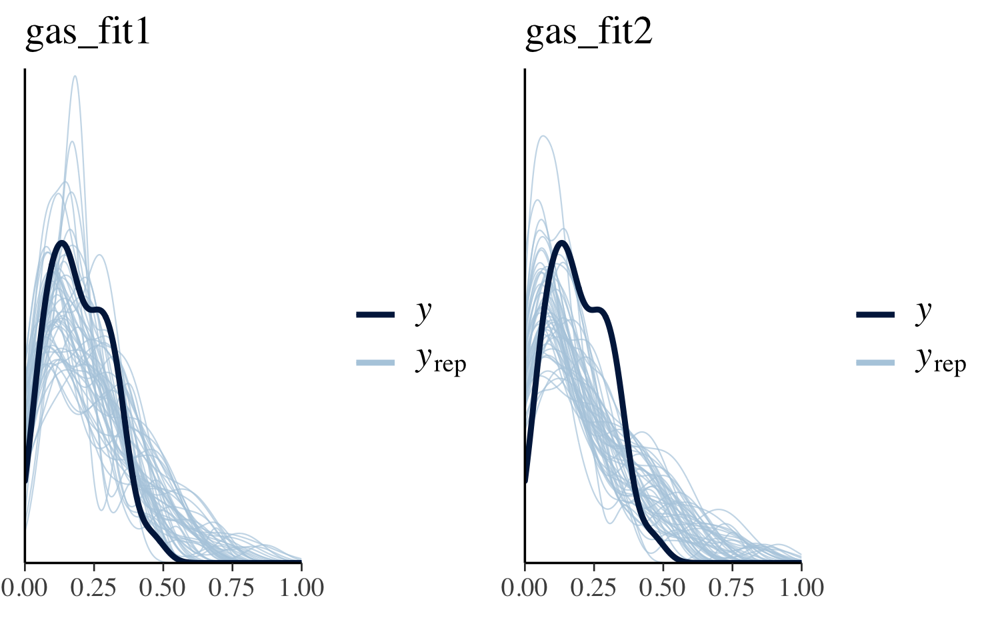

Modeling Rates/Proportions using Beta Regression with rstanarm
Imad Ali, Jonah Gabry and Ben Goodrich
2019-10-04
betareg.RmdIntroduction
This vignette explains how to model continuous outcomes on the open unit interval using the stan_betareg function in the rstanarm package.
The four steps of a Bayesian analysis are
- Specify a joint distribution for the outcome(s) and all the unknowns, which typically takes the form of a marginal prior distribution for the unknowns multiplied by a likelihood for the outcome(s) conditional on the unknowns. This joint distribution is proportional to a posterior distribution of the unknowns conditional on the observed data
- Draw from posterior distribution using Markov Chain Monte Carlo (MCMC).
- Evaluate how well the model fits the data and possibly revise the model.
- Draw from the posterior predictive distribution of the outcome(s) given interesting values of the predictors in order to visualize how a manipulation of a predictor affects (a function of) the outcome(s).
Steps 3 and 4 are covered in more depth by the vignette entitled “How to Use the rstanarm Package”. This vignette focuses on Step 1 when the likelihood is the product of beta distributions.
Likelihood
Beta regression uses the beta distribution as the likelihood for the data, \[ f(y_i | a, b) = \frac{y_i^{(a-1)}(1-y_i)^{(b-1)}}{B(a,b)} \] where \(B(\cdot)\) is the beta function. The shape parameters for the distribution are \(a\) and \(b\) and enter into the model according to the following transformations, \[ a = \mu\cdot\phi \\ b = (1-\mu)\cdot\phi \]
Let \(g_1(\cdot)\) be some link function. Then, in the specification of the shape parameters above, \(\mu = g_1^{-1}(\mathbf{X}\boldsymbol{\beta})\), where \(\boldsymbol{X}\) is a \(N\times K\) dimensional matrix of predictors, and \(\boldsymbol{\beta}\) is a \(K\) dimensional vector of parameters associated with each predictor.
In the simplest case (with only one set of regressors), \(\phi\) is a scalar parameter. Alternatively, it is possible to model \(\phi\) using a second set of regressors \(\mathbf{Z}\). In this context let \(g_2(\cdot)\) be some link function that is not necessarily identical to \(g_1(\cdot)\). Then \(\phi = g_2^{-1}(\mathbf{Z}\boldsymbol{\gamma})\), where \(\boldsymbol{\gamma}\) is a \(J\) dimensional vector of parameters associated with the \(N\times J\) dimensional matrix of predictors \(\mathbf{Z}\).
After substituting the shape parameter values in, the likelihood used in beta regression takes the following form, \[ f(y_i | \mu, \phi) = \frac{y_i^{(\mu\phi-1)}(1-y_i)^{((1-\mu)\phi-1)}}{B(\mu\phi,(1-\mu)\phi)} \]
Priors
A full Bayesian analysis requires specifying prior distributions \(f(\boldsymbol{\beta})\) and \(f(\phi)\) for the vector of regression coefficients and \(\phi\). When using stan_betareg, these distributions can be set using the prior_intercept, prior, and prior_phi arguments. The stan_betareg function supports a variety of prior distributions, which are explained in the rstanarm documentation (help(priors, package = 'rstanarm')).
When modeling \(\phi\) with a linear predictor a full Bayesian analysis requires specifying the prior distributions \(f(\boldsymbol{\beta})\) and \(f(\boldsymbol{\gamma})\). In stan_betareg the prior distributions on \(\boldsymbol{\gamma}\) can be set using the prior_intercept_z and prior_z arguments.
As an example, suppose we have \(K\) predictors and believe — prior to seeing the data — that \(\beta_1, \dots, \beta_K\) and \(\phi\) are as likely to be positive as they are to be negative, but are highly unlikely to be far from zero. These beliefs can be represented by normal distributions with mean zero and a small scale (standard deviation). To give \(\phi\) and each of the \(\beta\)s this prior (with a scale of 1, say), in the call to stan_betareg we would include the arguments prior_intercept = normal(0,1), prior = normal(0,1), and prior_phi = normal(0,1).
If, on the other hand, we have less a priori confidence that the parameters will be close to zero then we could use a larger scale for the normal distribution and/or a distribution with heavier tails than the normal like the Student t distribution. Step 1 in the “How to Use the rstanarm Package” vignette discusses one such example.
After fitting the model we can use the prior_summary function to print information about the prior distributions used when fitting the model.
Posterior
When using only a single set of regressors, the posterior distribution of \(\boldsymbol{\beta}\) and \(\phi\) is proportional to the product of the likelihood contributions, the \(K\) priors on the \(\beta_k\) parameters, and \(\phi\), \[ f(\boldsymbol{\beta},\phi|\mathbf{y},\mathbf{X}) \propto \prod_{i=1}^N f(y_i | a, b) \times \prod_{k=1}^K f(\beta_k) \times f(\phi) \]
When using two sets of regressors, the posterior distribution of \(\boldsymbol{\beta}\) and \(\boldsymbol{\gamma}\) is proportional to the product of the likelihood contribution, the \(K\) priors on the \(\beta_k\) parameters, and the \(J\) priors on the \(\gamma_j\) parameters,
\[ f(\boldsymbol{\beta},\boldsymbol{\gamma}|\mathbf{y},\mathbf{X}) \propto \prod_{i=1}^N f(y_i | a, b) \times \prod_{k=1}^K f(\beta_k) \times \prod_{j=1}^J f(\gamma_j) \]
An Example Using Simulated Data
In this example the outcome variable \(\mathbf{y}\) is simulated in a way that warrants the use of beta regression. It is worth mentioning that the data generation process is quite convoluted, which is apparent in the identification of the likelihood above.
The data simulated below uses the logistic link function on the first set of regressors and the log link function on the second set of regressors.
SEED <- 1234
set.seed(SEED)
eta <- c(1, -0.2)
gamma <- c(1.8, 0.4)
N <- 200
x <- rnorm(N, 2, 2)
z <- rnorm(N, 0, 2)
mu <- binomial(link = logit)$linkinv(eta[1] + eta[2]*x)
phi <- binomial(link = log)$linkinv(gamma[1] + gamma[2]*z)
y <- rbeta(N, mu * phi, (1 - mu) * phi)
dat <- data.frame(cbind(y, x, z))
hist(dat$y, col = "darkgrey", border = F, main = "Distribution of Outcome Variable", xlab = "y", breaks = 20, freq = F)
The model can be fit by calling stan_betareg, using the appropriate link functions.
library(rstanarm)
fit1 <- stan_betareg(y ~ x | z, data = dat, link = "logit", link.phi = "log",
cores = 2, seed = 12345)
fit2 <- stan_betareg(y ~ -1 + x , data = dat, link = "logit", link.phi = "log",
cores = 2, seed = 12345)
round(coef(fit1), 2)
round(coef(fit2), 2) (Intercept) x (phi)_(Intercept) (phi)_z
0.94 -0.20 1.84 0.32 x (phi)_(Intercept)
0.00 1.08 For clarity we can use prior_summary to print the information about the prior distributions used to fit the models. The priors used in fit1 are provided below.
Priors for model 'fit1'
------
Intercept (after predictors centered)
~ normal(location = 0, scale = 10)
Coefficients
Specified prior:
~ normal(location = 0, scale = 2.5)
Adjusted prior:
~ normal(location = 0, scale = 1.2)
Intercept_z (after predictors centered)
~ normal(location = 0, scale = 10)
Coefficients_z
Specified prior:
~ normal(location = 0, scale = 2.5)
Adjusted prior:
~ normal(location = 0, scale = 1.2)
------
See help('prior_summary.stanreg') for more detailsThe usual posterior analyses are available in rstanarm. The plots below illustrate simulated values of the outcome variable. The incorrect model noticeably fails to capture the top of the distribution consistently in comparison to the true model.
library(ggplot2)
library(bayesplot)
bayesplot_grid(
pp_check(fit1), pp_check(fit2),
xlim = c(0,1),
ylim = c(0,4),
titles = c("True Model: y ~ x | z", "False Model: y ~ x - 1"),
grid_args = list(ncol = 2)
)
We can also compare models by evaluating the expected log pointwise predictive density (elpd), which can be calculated using the loo method, which provides an interface for rstanarm models to the functionality in the loo package.
elpd_diff se_diff
fit1 0.0 0.0
fit2 -80.1 11.9 The difference in elpd is negative indicating that the expected predictive accuracy for the first model is higher.
An Example Using Gasoline Data
In some applied contexts it may be necessary to work with an outcome variable that is a proportion. If the proportion is bound on the open unit interval then beta regression can be considered a reasonable estimation method. The betareg package provides a dataset on the proportion of crude oil converted to gasoline after distillation and fractionation. This variable is defined as yield. Below stan_betareg is used to model yield as a function of temperature, pressure, and the batch of conditions.
library(rstanarm)
data("GasolineYield", package = "betareg")
gas_fit1 <- stan_betareg(yield ~ temp + batch, data = GasolineYield, link = "logit",
seed = 12345)
gas_fit2 <- stan_betareg(yield ~ temp + batch | pressure,
data = GasolineYield, link = "logit",
seed = 12345)
round(coef(gas_fit1), 2)
round(coef(gas_fit2), 2)(Intercept) temp batch1 batch2 batch3 batch4
-5.13 0.01 1.34 0.92 1.13 0.76
batch5 batch6 batch7 batch8 batch9 (phi)
0.79 0.71 0.29 0.26 0.13 12.11 (Intercept) temp batch1 batch2
-6.08 0.01 1.70 1.29
batch3 batch4 batch5 batch6
1.53 1.04 1.11 1.02
batch7 batch8 batch9 (phi)_(Intercept)
0.52 0.48 0.36 5.43
(phi)_pressure
0.04 The plots below illustrate simulated values of gasoline yield. While the first model accounts for variation in batch conditions its predictions looks somewhat uniform rather than resembling the peaked and right-skewed behavior of the true data. The second model does a somewhat better job at capturing the shape of the distribution, however its location is off as it is centered around 0.50 rather than 0.20.
library(ggplot2)
bayesplot_grid(
pp_check(gas_fit1), pp_check(gas_fit2),
xlim = c(0,1),
ylim = c(0,5),
titles = c("gas_fit1", "gas_fit2"),
grid_args = list(ncol = 2)
)
elpd_diff se_diff
gas_fit2 0.0 0.0
gas_fit1 -34.2 3.6 Evaluating the expected log predictive distribution using loo reveals that the second of the two models is preferred.